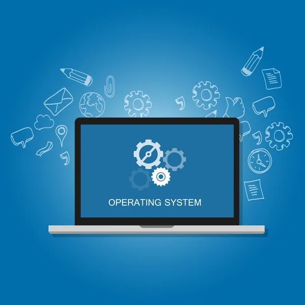

Sitema Operacional
O sistema operacional é um software, ou um conjunto de softwares, que tem como papel gerenciar e administrar todos os recursos presentes em um sistema. Isso envolve desde os componentes do hardware e sistemas de arquivos até programas de terceiros. Para ficar mais claro, quando você simplesmente aciona um botão para ligar seu dispositivo, ele sempre realiza uma bateria de testes. Isso é essencial para que o computador ou notebook, por exemplo, possam certificar que tudo irá funcionar dentro do esperado. Nesse caso, a verificação envolve desde os componentes físicos até o hardware – somente depois desse processo ser feito é que o sistema operacional é iniciado. Um papel bem relevante do sistema operacional é que ele atua de maneira a garantir que um programa não acabe por interferir em outro. Isso quer dizer que ele age como um tipo de gerente de recursos, criando um ambiente que contribua para a execução de maneira conveniente. Ou seja, é simples sem abrir mão de uma inquestionável eficiência.
Voltar